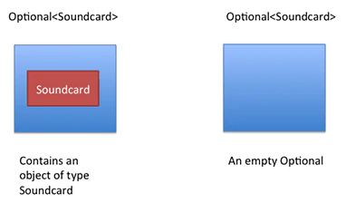
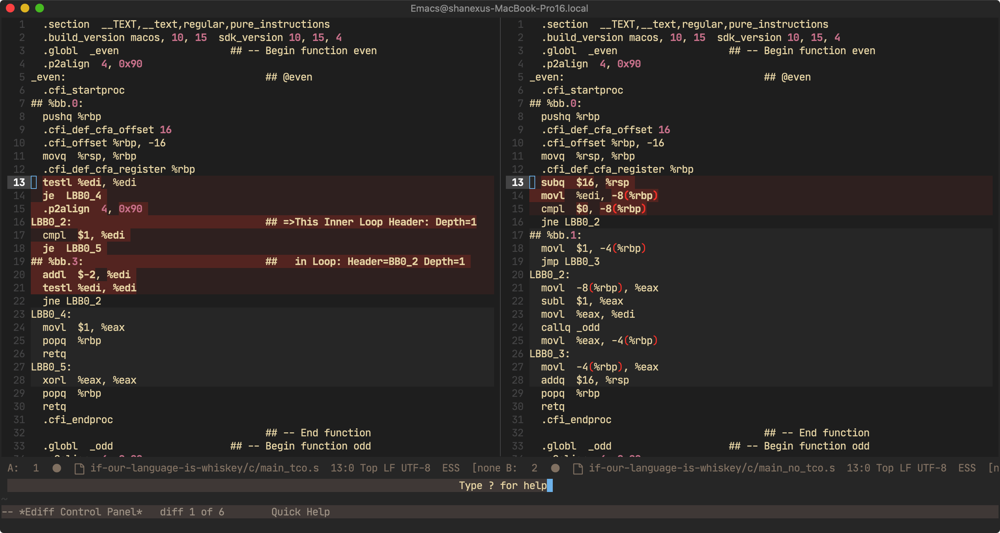
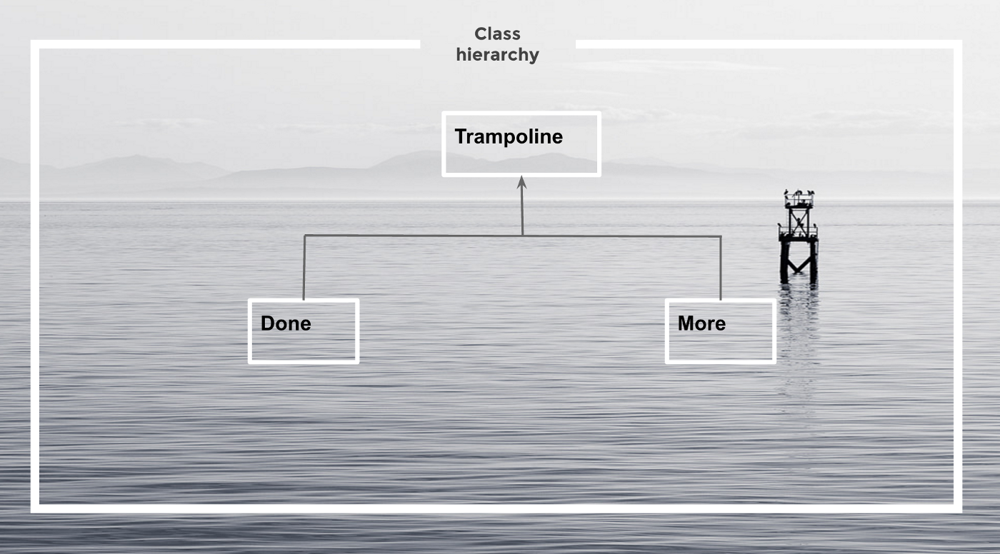
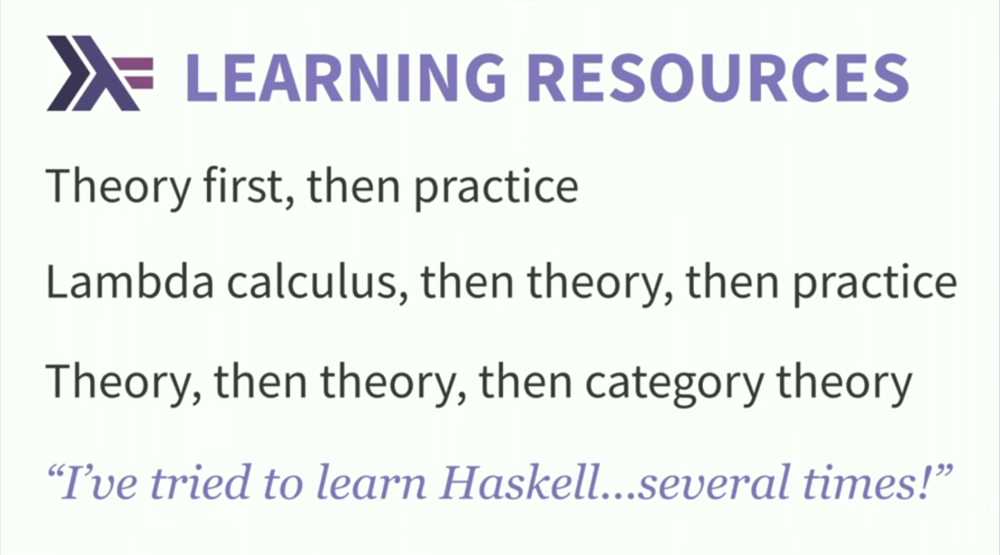
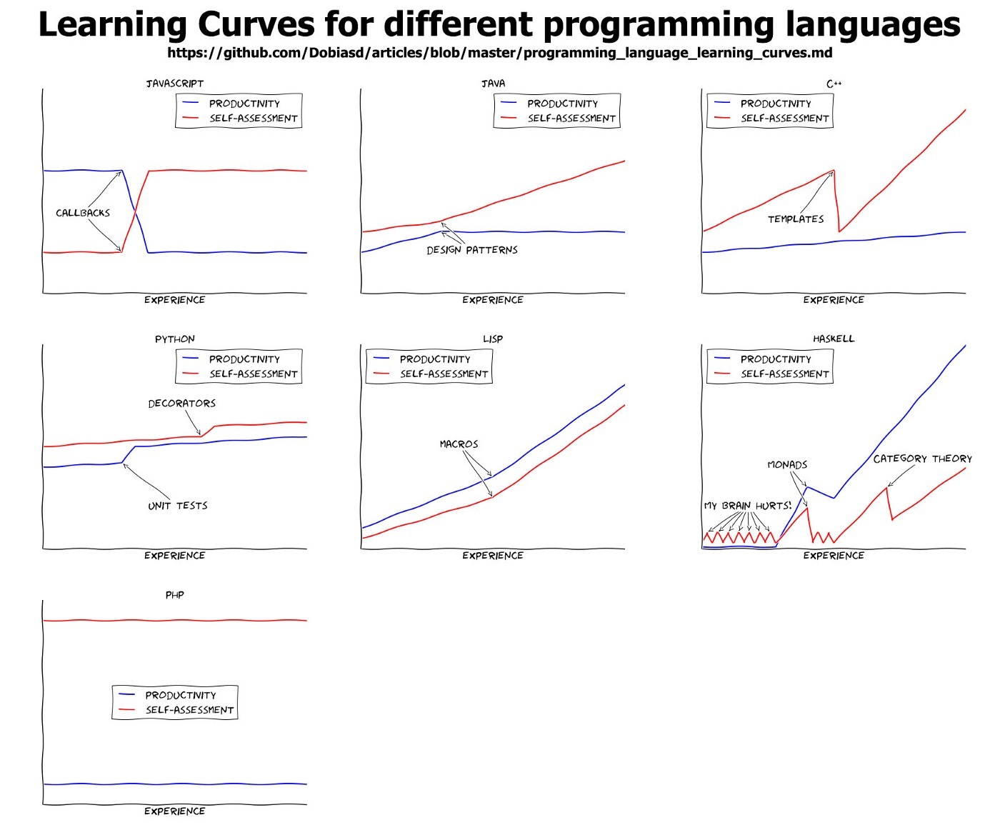
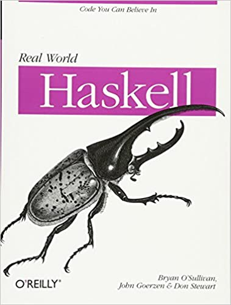
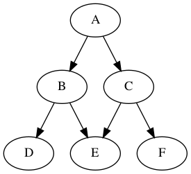
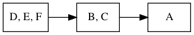

如果我们的语言是威士忌——函数式编程初窥
Xu Sheng
2020-09-12
Created: 2020-09-14 Mon 13:53
Table of Contents
1 前言
- Java8引入的“新”特性
- Haskell
- 函数复合、高阶函数、懒惰求值、不可变数据
- 纯函数、副作用、函子、应用函子、单子
1.1 费曼的彩虹
“那你觉得彩虹的哪一个特色，让笛卡儿产生做数学分析的灵感？”
“其实彩虹是圆锥体的一段，当水滴被来自观察者后方的光线照射时，会呈现出弧状的光谱颜色。我想他的灵感来自于他发现可以藉由思考单一的水滴，以及它的几何位置来分析这个问题。”
“我会说他的灵感来自于他认为彩虹很美。”
《费曼的彩虹:物理大师的最后24堂课》
1.2 Lambda

2 Java函数式编程
March 18, 2014
Java Programming Language
- Lambda Expressions, a new language feature, has been introduced in this release.
- Method references provide easy-to-read lambda expressions for methods that already have a name.
Collections
- Classes in the new java.util.stream package provide a Stream API to support functional-style operations on streams of elements.
2.1 stream
2.1.1 Iterating through a List
for(T t : listOfT) {
// do something
}
void forEach(Consumer<? super T> action);
final List<String> friends =
Arrays.asList("Brian", "Nate", "Neal", "Raju", "Sara", "Scott");
for(String name : friends) {
System.out.println(name);
}
friends.forEach((final String name) -> System.out.println(name));
friends.forEach((name) -> System.out.println(name));
friends.forEach(name -> System.out.println(name));
friends.forEach(System.out::println);
2.1.2 Transforming a List
List<R> listOfR = new ArrayList<>();
for(T t : listOfT) {
R r = map(t);
listOfR.put(r);
}
<R> Stream<R> map(Function<? super T, ? extends R> mapper);
final List<String> uppercaseNames = new ArrayList<String>();
for(String name : friends) {
uppercaseNames.add(name.toUpperCase());
}
final List<String> uppercaseNames = new ArrayList<String>();
friends.forEach(name -> uppercaseNames.add(name.toUpperCase()));
friends.stream().map(name -> name.toUpperCase());
friends.stream().map(String::toUpperCase);
2.1.3 Finding Elements
List filteredListOfT = new LinkedList<>();
for(T t : listOfT) {
if (predicate(t)) {
filteredListOfT.add(t);
}
}
Stream<T> filter(Predicate<? super T> predicate);
final List<String> startsWithN = new ArrayList<String>();
for(String name : friends) {
if(name.startsWith("N")) {
startsWithN.add(name);
}
}
final List<String> startsWithN = friends.stream()
.filter(name -> name.startsWith("N")).collect(Collectors.toList());
2.1.4 Reducing a Collection to a Single Value
T result = null;
for (int i = 0; i < listOfT.size(); i++) {
T t = listOfT.get(i);
if (i == 0) {
result = t;
continue;
}
result = accumulator(t, result);
}
Optional<T> reduce(BinaryOperator<T> accumulator);
T result = identity;
for (T t : listOfT) {
result = accumulator(t, result);
}
T reduce(T identity, BinaryOperator<T> accumulator);
U result = identity;
for (T t : listOfT) {
U partialResult = accumulator(t, result);
result = combiner(result, partialResult);
}
<U> U reduce(U identity,
BiFunction<U, ? super T, U> accumulator,
BinaryOperator<U> combiner);
Map<Long, User> userMap = Maps.newHashMap();
for (User user : users) {
userMap.put(user.getId(), user);
}
users.stream().reduce(
Collections.emptyMap(),
(Map<Long, User> acc, User user) -> {
acc.put(user.getId(), user);
return acc;
}, (acc1, acc2) -> {
acc1.putAll(acc2);
return acc1;
});
users.stream().reduce(
Collections.emptyMap(),
(Map<Long, User> acc, User user) -> {
HashMap<Long, User> newAcc = Maps.newHashMap(acc);
newAcc.put(user.getId(), user);
return newAcc;
}, (acc1, acc2) -> {
HashMap<Long, User> newAcc = Maps.newHashMap(acc1);
newAcc.putAll(acc2);
return newAcc;
});
users.stream().collect(Collectors.toMap(User::getId, Function.identity()));
List<String> friends = ...;
Optional<String> longestName = Optional.empty();
for (String name : friends) {
if (!longestName.isPresent()) {
longestName = Optional.of(name);
continue;
}
if (name.length() >= longestName.get().length()) {
longestName = Optional.of(name);
}
}
List<String> friends = ...;
Optional<String> longestName = friends.stream()
.reduce((name1, name2) ->
name1.length() >= name2.length() ? name1 : name2);
2.2 optional
Java SE 8 introduces a new class called java.util.Optional<T> that is inspired from the ideas of Haskell (Maybe t) and Scala (Option[T]). It is a class that encapsulates an optional value. You can view Optional as a single-value container that either contains a value or doesn't (it is then said to be "empty").

you are not a real Java programmer until you've dealt with a null pointer exception
2.2.1 一个例子
假设我们要追溯克隆羊的实验，我们想知道羊的基因历史，我们提供了 father, mother 方法用来查找羊的双亲，但是由于这些羊中有一些是克隆羊，所以这些羊不一定都有父母。
class Sheep {}
public static Sheep father(Sheep sheep) {
// ...
}
public static Sheep mother(Sheep sheep) {
// ...
}
2.2.2 定义函数 maternalGrandfather ，找羊的外祖父
public static Sheep maternalGrandfather(Sheep s) {
Sheep m = mother(s);
if (m != null) {
return father(m);
}
return null;
}
2.2.3 定义函数 mothersPaternalGrandfather 找羊的曾外祖父(妈的爸的爸)
public static Sheep mothersPaternalGrandfather(Sheep s) {
Sheep m = mother(s);
if (m != null) {
Sheep f = father(m);
if (f != null) {
return father(f);
}
}
return null;
}
2.2.4 定义函数曾曾曾……….外祖父？

2.2.5 如果我们使用 Optional
public static Optional<Sheep> fatherOpt(Sheep sheep) {
return Optional.ofNullable(father(sheep));
}
public static Optional<Sheep> motherOpt(Sheep sheep) {
return Optional.ofNullable(mother(sheep));
}
2.2.6 定义函数 maternalGrandfatherOpt ，找羊的外祖父
public static Optional<Sheep> maternalGrandfatherOpt(Sheep s) {
return motherOpt(s).flatMap(OptionalSample::fatherOpt);
}
2.2.7 现在定义函数 mothersPaternalGrandfatherOpt 找羊的曾外祖父(妈的爸的爸)
public static Optional<Sheep> mothersPaternalGrandfatherOpt(Sheep s) {
return motherOpt(s)
.flatMap(OptionalSample::fatherOpt)
.flatMap(OptionalSample::fatherOpt);
}
2.2.8 现在定义函数 mothersFathersMothersFathersMotherOpt 找羊的妈的爸的妈的爸的妈
public static Optional<Sheep> mothersFathersMothersFathersMotherOpt(Sheep s) {
return motherOpt(s)
.flatMap(OptionalSample::fatherOpt)
.flatMap(OptionalSample::motherOpt)
.flatMap(OptionalSample::fatherOpt)
.flatMap(OptionalSample::motherOpt);
}
2.3 working with resources
interface RedisOperation<T> {
T run(Jedis jedis);
}
class JedisPoolWrapper {
private final JedisPool pool;
public JedisPoolWrapper(JedisPool pool) {
this.pool = pool;
}
public <T> T run(RedisOperation<T> operation) {
Jedis resource = pool.getResource();
try {
return operation.run(resource);
} finally {
pool.returnResource(resource);
}
}
}
jedisPoolWrapper.run(jedis -> jedis.get("hello.world"));
2.4 optimizing recursions
2.4.1 Tail-Call Optimization (TCO)
#include <stdio.h>
int even(int n);
int odd(int n);
int even(int n) {
if (n == 0) {
return 1;
}
return odd(n - 1);
}
int odd(int n) {
if (n == 0) {
return 0;
}
return even(n - 1);
}
int main() {
printf("%d", even(1000000));
}
$ gcc main.c && ./a.out
[1] 79338 segmentation fault ./a.out
$ gcc -O2 main.c && ./a.out
1
$ gcc -S -O2 main.c -o main_tco.s
$ gcc -S main.c -o main_no_tco.s

int even(int n) {
if (n == 0) {
return 1;
}
LBB0_2:
if (n == 1) {
return 0;
}
n-=2;
if (n != 0) {
goto LBB0_2;
}
return 1;
}
2.4.2 Java does not provide Tail-Call Optimization (TCO)
package org.xusheng.ioliw.tco;
public class NoTCO {
private static boolean even(int n) {
if (n == 0) {
return true;
}
return odd(n - 1);
}
private static boolean odd(int n) {
if (n == 0) {
return false;
}
return even(n - 1);
}
public static void main(String[] args) {
System.out.println(even(100000));
}
}
Exception in thread "main" java.lang.StackOverflowError
at org.xusheng.ioliw.tco.NoTCO.odd(NoTCO.java:15)
at org.xusheng.ioliw.tco.NoTCO.even(NoTCO.java:8)
at org.xusheng.ioliw.tco.NoTCO.odd(NoTCO.java:15)
at org.xusheng.ioliw.tco.NoTCO.even(NoTCO.java:8)
at org.xusheng.ioliw.tco.NoTCO.odd(NoTCO.java:15)
...
2.4.3 Trampolines

package org.xusheng.ioliw.tco;
import java.util.stream.Stream;
public interface Trampoline<T> {
T get();
default Trampoline<T> jump() {
return this;
}
default T result() {
return get();
}
default boolean complete() {
return true;
}
}
static <T> Trampoline<T> done(final T result) {
return () -> result;
}
static <T> Trampoline<T> more(final Trampoline<Trampoline<T>> trampoline) {
return new Trampoline<T>() {
@Override
public boolean complete() {
return false;
}
@Override
public Trampoline<T> jump() {
return trampoline.result();
}
@Override
public T get() {
return trampoline(this);
}
T trampoline(final Trampoline<T> trampoline) {
return Stream.iterate(trampoline, Trampoline::jump)
.filter(Trampoline::complete)
.findFirst()
.map(Trampoline::result)
.orElse(null);
}
};
}
package org.xusheng.ioliw.tco;
import static org.xusheng.ioliw.tco.Trampoline.done;
import static org.xusheng.ioliw.tco.Trampoline.more;
public class UseTrampoline {
public static Trampoline<Boolean> evenRec(int n) {
if (n == 0) {
return done(true);
}
return more(() -> oddRec(n - 1));
}
public static Trampoline<Boolean> oddRec(int n) {
if (n == 0) {
return done(false);
}
return more(() -> evenRec(n - 1));
}
public static void main(String[] args) {
System.out.println(evenRec(100000).get());
}
}
public static long fibonacciNaive(long n) {
if (n == 0) {
return 0;
}
if (n == 1) {
return 1;
}
return fibonacciNaive(n - 1) + fibonacciNaive(n - 2);
}
public static Trampoline<Long> fibonacci(long step, long a, long b) {
if (step == 0) {
return done(a);
}
return more(() -> fibonacci(step - 1, b, a + b));
}
public static void main(String[] args) {
System.out.println(fibonacci(45, 0, 1).get());
System.out.println(fibonacciNaive(45));
}

3 Haskell函数式编程语言
An advanced, purely functional programming language
3.1 关于 Haskell 的段子
3.1.1 how to learn Haskell

3.1.2 learning curves for different programming languages



3.1.3 code written in Haskell is guaranteed to have no side effects

3.1.4 我大概看了这本书十年
Real World Hashell

3.2 pure function
在程序设计中，若一个函数符合以下要求，则它可能被认为是纯函数：
- 此函数在相同的输入值时，需产生相同的输出。函数的输出和输入值以外的其他隐藏信息或状态无关，也和由I/O设备产生的外部输出无关。
- 该函数不能有语义上可观察的函数副作用，诸如“触发事件”，使输出设备输出，或更改输出值以外物件的内容等。
double :: Int -> Int
double i = i + i
square :: Int -> Int
square i = i * i
factorial :: Integer -> Integer
factorial n = product [1..n]
3.3 immutable data
data Person = Person { firstName :: String
, lastName :: String
} deriving (Show)
p1 = Person { firstName = "Shane", lastName = "Xu" }
p2 = p1 { firstName = "Sheng" }
data User = User Int String
3.4 first-class function
add :: Int -> Int -> Int
add a b = a + b
adder1 :: Int -> Int
adder1 x = x + 1
adder1' = add 1
multiply :: Int -> Int -> Int
multiply a b = a * b
multiplier2 = multiply 2
add1ThenMultiply2 = multiplier2 . adder1
map plus1ThenMultiply2 [1, 2, 3]
map (\i -> ( i + 1) * 2) [1, 2, 3]
3.5 lazy
fib = 0 : 1 : [ a+b | (a,b) <- zip fib (tail fib) ]
take 11 fib
fib !! 11
3.6 handle side effect
hello :: String -> IO ()
hello who = putStrLn ("Hello, " ++ who ++ "!")
main :: IO ()
main = hello "World"
3.7 Functor(函子), Applicative Functor(应用函子), Monad(单子)
3.7.1 Functor
class Functor f where
fmap :: (a -> b) -> f a -> f b
3.7.2 Applicative
class (Functor f) => Applicative f where
pure :: a -> f a
(<*>) :: f (a -> b) -> f a -> f b'
3.7.3 Monad
class Monad m where
(>>=) :: m a -> (a -> m b) -> m b
(>>) :: m a -> m b -> m b
return :: a -> m a
fail :: String -> m a
Optional
data Optional t
= Some t
| None deriving (Eq, Ord, Show)
instance Functor Optional where
fmap _ None = None
fmap f (Some x) = Some (f x)
instance Applicative Optional where
pure = Some
None <*> a = None
Some f <*> a = fmap f a
instance Monad Optional where
None >>= f = None
Some x >>= f = f x
Maybe is a Monad
Just 1
>> return 2
>>= \t -> return (t+1)
>>= (bind function)
Haskell的 Maybe 就是Java的 Optional 。
>>= 操作符或者叫 bind 函数，其实就是 flatMap 。
让我们解决羊的问题，
data Sheep = Sheep Int Name
fatherMaybe :: Sheep -> Maybe Sheep
fatherMaybe s = undefined
motherMaybe :: Sheep -> Maybe Sheep
motherMaybe = undefined
定义函数 mothersFathersMothersFathersMotherMaybe 找羊的妈的爸的妈的爸的妈
mothersFathersMothersFathersMotherMaybe :: Sheep -> Maybe Sheep
mothersFathersMothersFathersMotherMaybe s =
motherMaybe s >>=
fatherMaybe >>=
motherMaybe >>=
fatherMaybe >>=
motherMaybe
IO is a Monad
putStrLn "Who are you?"
>> getLine
>>= \name -> putStrLn ("Hello, " ++ name ++ "!")
Prelude> :{
Prelude| :type putStrLn "Who are you?"
Prelude| >> getLine
Prelude| >>= \name -> putStrLn ("Hello, " ++ name ++ "!")
Prelude| :}
putStrLn "Who are you?"
>> getLine
>>= \name -> putStrLn ("Hello, " ++ name ++ "!")
:: IO ()
Prelude>
do
name <- getLine
putStrLn ("Hello, " ++ name + "!")
Why Monad?
- Modularity
- Flexibility
- Isolation
4 Haxl

Haxl是一个基于Monad的优雅的数据加载框架。
- batch multiple requests to the same data source,
- request data from multiple data sources concurrently,
- cache previous requests,
- memoize computations.
4.1 fun with haxl
https://github.com/shanexu/FunWithHaxl
$ stack setup
$ stack run
{-# LANGUAGE OverloadedStrings #-}
module Main where
import System.Environment
import qualified HaxlBlog as H
import qualified BlogDB as R
defaultDB = "blog.sqlite"
main :: IO ()
main = do
putStrLn "raw:"
R.run (R.getPostIds >>= mapM R.getPostContent) >>= print
putStrLn "haxl:"
H.run (H.getPostIds >>= mapM H.getPostContent) >>= print
raw:
select postid from postinfo;
select content from postcontent where postid = 1;
select content from postcontent where postid = 2;
select content from postcontent where postid = 3;
select content from postcontent where postid = 4;
select content from postcontent where postid = 5;
select content from postcontent where postid = 6;
select content from postcontent where postid = 7;
select content from postcontent where postid = 8;
select content from postcontent where postid = 9;
select content from postcontent where postid = 10;
select content from postcontent where postid = 11;
select content from postcontent where postid = 12;
["example content 1","example content 2","example content 3","example content 4","example content 5","example content 6","example content 7","example content 8","example content 9","example content 10","example content 11","example content 12"]
haxl:
select postid from postinfo;
select postid,content from postcontent where postid in (12,11,10,9,8,7,6,5,4,3,2,1);
["example content 1","example content 2","example content 3","example content 4","example content 5","example content 6","example content 7","example content 8","example content 9","example content 10","example content 11","example content 12"]
4.2 make a plain
假设几个数据之间依赖关系如下：

一种资源获取/计算的执行计划可以如下：

4.3 scala fetch
4.3.1 一个例子
package org.xusheng.ioliw
import cats.data.NonEmptyList
import cats.effect._
import cats.instances.list._
import cats.syntax.all._
import fetch._
object sample {
type NodeName = String
case class Node(name: NodeName)
case class Dep(name: NodeName, deps: List[NodeName])
def latency[F[_] : Concurrent](msg: String): F[Unit] =
for {
_ <- Sync[F].delay(println(s"--> [${Thread.currentThread.getId}] $msg"))
_ <- Sync[F].delay(Thread.sleep(1000))
_ <- Sync[F].delay(println(s"<-- [${Thread.currentThread.getId}] $msg"))
} yield ()
val nodeDatabase: Map[NodeName, Node] = Map(
"A" -> Node("A"),
"B" -> Node("B"),
"C" -> Node("C"),
"D" -> Node("D"),
"E" -> Node("E"),
"F" -> Node("F")
)
object Nodes extends Data[NodeName, Node] {
def name = "Nodes"
def source[F[_] : ConcurrentEffect]: DataSource[F, NodeName, Node] = new DataSource[F, NodeName, Node] {
override def data = Nodes
override def CF = ConcurrentEffect[F]
override def fetch(id: NodeName): F[Option[Node]] =
latency[F](s"One Node $id") >> CF.pure(nodeDatabase.get(id))
// override def maxBatchSize: Option[Int] = Some(2)
override def batchExecution: BatchExecution = InParallel
override def batch(ids: NonEmptyList[NodeName]): F[Map[NodeName, Node]] =
latency[F](s"Batch Nodes $ids") >> CF.pure(nodeDatabase.filterKeys(ids.toList.toSet))
}
}
def getNode[F[_] : ConcurrentEffect](id: NodeName): Fetch[F, Node] =
Fetch(id, Nodes.source)
def getGraph[F[_] : ConcurrentEffect](id: NodeName, deps: Map[NodeName, List[NodeName]]): Fetch[F, Node] =
for {
_ <- deps.get(id).map {
ids => ids.traverse(i => getGraph(i, deps))
}.getOrElse(Fetch.pure[F, List[Node]](List.empty))
n <- getNode(id)
} yield n
def main(args: Array[String]): Unit = {
import java.util.concurrent._
import scala.concurrent.ExecutionContext
import scala.concurrent.duration._
val executor = new ScheduledThreadPoolExecutor(4)
val executionContext: ExecutionContext = ExecutionContext.fromExecutor(executor)
implicit val timer: Timer[IO] = IO.timer(executionContext)
implicit val cs: ContextShift[IO] = IO.contextShift(executionContext)
val deps = Map(
"A" -> List("B", "C"),
"B" -> List("D", "E"),
"C" -> List("E", "F"),
)
Fetch.run[IO](getGraph("A", deps)).unsafeRunTimed(10.seconds)
executor.shutdown()
}
}
--> [19] Batch Nodes NonEmptyList(D, E, F)
<-- [19] Batch Nodes NonEmptyList(D, E, F)
--> [21] Batch Nodes NonEmptyList(B, C)
<-- [21] Batch Nodes NonEmptyList(B, C)
--> [19] One Node A
<-- [19] One Node A
5 参考文档
- Why Functional Programming Matters
https://www.cs.kent.ac.uk/people/staff/dat/miranda/whyfp90.pdf - All About Monads
https://wiki.haskell.org/All_About_Monads - Stackless Scala With Free Monads
http://blog.higher-order.com/assets/trampolines.pdf - There is no Fork: an Abstraction for Efficient, Concurrent, and Concise Data Access
http://simonmar.github.io/bib/papers/haxl-icfp14.pdf - Real World Haskell
http://book.realworldhaskell.org/read/ - Category Theory for Programmers
https://github.com/hmemcpy/milewski-ctfp-pdf
6 关于标题
《如果我们的语言是威士忌》是村上春树的游记，他的文字带着我们走上他独特视线的异国之旅。那异国的风土人情，远方香醇的威士忌，在他的笔下缓缓流出，流入读者心中，沁人心脾。